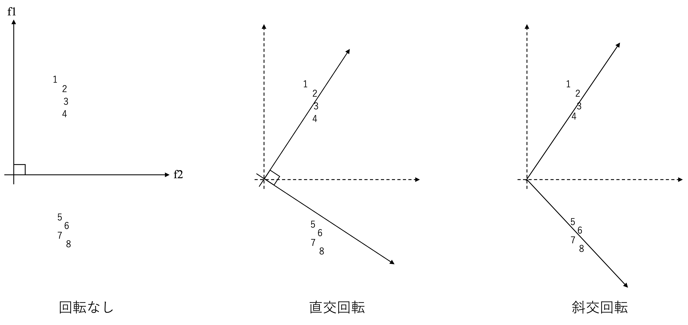

2因子モデルと軸の回転
ここまでの説明では、1つの因子を想定した1因子モデルを紹介したが、因子分析は複数の因子を想定したモデルも採用できる。この場合も、基本的には1因子モデルと同じように計算が可能だが、複数因子モデルにおいては、（1）軸の回転と、（2）因子数の決定、という2点について追加的に考える必要が出てくる。複数因子モデルでは、因子\(\times\)因子負荷量の解の座標の取り方が一意に定まらないという性質を持っている。因子分析の実行においては、この特徴を逆手にとり、解釈が容易になるよう（単純構造化した）軸を回転させることが可能になる23。ここでいう単純構造とは各変数が1つの因子だけから強い影響を受け、他の因子からの影響が0に近くなるように見える構造を意味している。
軸の回転の方法としては主に、直交回転と斜交回転という2つのアプローチが存在する。直交回転とは、因子負荷量行列に直交行列をかけた解のことである。この方法では、因子間に相関がないことを仮定している。直交回転法代表例がバリマックス回転である。一方で斜交回転は、直交ではない回転を表しており、因子間の相関を認める方法である。斜交回転法の代表例はプロマックス回転である。図19 は、因子軸の回転について直感的に示した概要図である。この図は1から8までの観測変数同士の関係について示しており、1から4と、5から８という二つのグループに分かれているように伺える。
しかしながら、回転なしで因子分析を実行するとこのようなデータの構造を明示的に捉えることができないかもしれない。回転なし（初期解）の図において、\(f1\)の軸においてはそれぞれ異なる程度をもっていることが伺えるものの、\(f2\)の軸では、すべての観測変数が \(f2\) に同じような負荷を持っていることがうかがえる。そのため、因子負荷量に基づき、それぞれの変数に対する因子構造について解釈することが難しい。このような場合、データの特徴を変えることはできないが、軸を回転させることで、あるグループにとっては \(f1\)（\(f2\)）への負荷量が小さいが、\(f2\)（\(f1\)）への負荷量は大きいというような構造を実現することができる。例えば直交回転では、直交（軸同士の角度が90度）である条件は守ったままではあるが、1から4はf1に高いがf2には低い値を取っていることがうかがえる。さらに斜交回転においては、軸の角度を自由に取ることができ、より単純構造化されていることがうかがえる。このように、複数因子を採用して探索的因子分析を実行する場合、因子軸の回転を採用することで、分析者にとってより解釈しやすい単純構造化を実現することが多い。

Figure 19: 因子軸の回転概要
因子数の決定
因子分析では、モデルで採用する因子の数を自由に決定する事ができる。因子負荷量の行列は、データの相関行列を固有ベクトルと固有値（を持つ行列）にそれぞれ分解（固有値分解）することで計算されている（分寺、2022）。そして因子の数はこのプロセスに求められた固有値の値を用いて検討される。固有値分解の詳細について本書では扱わない。基本的には、より少ない因子数で全体を説明できることが好ましいのだが、因子数を少なくしすぎて説明力が下がるのは好ましくない。そのため、?? 章での説明と同様、効率性と有効性のバランスを探ることになる。以下では、因子数を決めるために用いられている基準をいくつか紹介する。
第1に、各因子の固有値（eigen value）に基づく基準である。項目間の相関行列の次元（固有値の数）について、固有値分解によって求めた固有値を確認することで検討する。固有値の数は項目の数だけ計算可能であり、固有値は通常正の値を取ることが想定される（小塩, 2024）。因子数判断の基準では、固有値の値を確認し、その固有値に対応する因子を残すかどうかを判断することになる。固有値の値は直感的には、項目何個分の情報量を有しているかを意味する。そのため、1を越えていない因子についてはモデルに含めないと判断する事が多い。このような判断基準はガットマン基準やカイザー基準と呼ばれる。この時計算される各因子の固有値はその因子の寄与率にも対応しており、固有値が1ということは、（直感的には）観測変数1項目分の分散を説明していると解釈することも可能である。そのため、固有値が1以上の因子のみをモデルに用いるという方法が慣習的に広く用いられているのだが、この基準に対する批判も存在していることに注意が必要である。
第2の因子数判断基準にスクリープロットの活用がある。これは、因子数を横軸にとり、それに対応する固有値を縦にプロットしたものである。図20 はスクリープロットの例である。スクリープロットでは、固有値そのものに加え、因子数を増やすことによる固有値の変化量（傾き）の変化にも着目する。例えば図20 については、因子数が2から3への変化では傾きが急であるが、3以上になった点からプロットの傾きが緩やかになっている。この場合、3因子目は説明力が低く、それ以降の因子についても説明力が高くない事が伺える。そのため、20 の結果では、2因子モデルを採用することが有力となる。

Figure 20: スクリープロット
固有値とスクリープロットによる因子数の決定は伝統的に広く用いられている基準であるが、この他にも、乱数を用いて計算された固有値との比較（平行分析）などがあるので、関心がある人はぜひ学習してみてほしい。
得点化
因子分析は、心理尺度と密接な関係を持つ分析手法である。心理尺度は何らかの心理的特性や状況を数値化して表現するために用いられる。そして因子分析は尺度全体の構造を評価するための統計的手法として機能する。心理尺度を分析に使うためには、因子構造をもとにその尺度を得点化する必要がある。ここでは代表的な得点化の方法を紹介する。
因子分析の結果複数の因子が発見された場合、それぞれの因子に対して高い因子負荷量を持つ項目がその因子に対応する形で得点化される。このときの得点化方法として最も単純なものは、対応する項目の合計値を計算することや、それを項目数で割った平均値を計算する方法である。例えば、表 8 では、項目 1、 2、 3は因子1に、項目 4、 5、 6は因子2にそれぞれ高い因子負荷量を持っている。合計値（平均値）法ではこのとき、各人の項目1から3の合計値（平均値）を因子1の得点として、項目4から6の合計値（平均値）を因子2の得点として用いる。
| 項目 | 因子1 | 因子2 |
|---|---|---|
| 項目1 | 0.82 | 0.21 |
| 項目2 | 0.91 | 0.03 |
| 項目3 | 0.79 | 0.3 |
| 項目4 | 0.02 | 0.96 |
| 項目5 | 0.2 | 0.84 |
| 項目6 | 0.14 | 0.89 |
合計値に比べて平均値はその値の解釈が容易であるという利点を持つ。例えば、7点尺度項目の合計値の場合、合算する項目件数をその都度確認しなければ解釈が難しいが、平均値であればその必要はない。以下では便宜的に合計値を使う方法も平均値を使う方法もどちらも含めて合計値法と呼ぶ。
これらの方法に加え、因子分析の結果に基づき、各個体が因子に対してどれだけの特性値を持っているのか、因子の推定値を割り振ることができる。このように割り振られた数値を因子得点（因子スコア）と呼ぶ、これは、因子モデルの誤差を排除した状態で算出される因子の予測値として解釈できる。そのため、因子スコアを採用することによる利点もあるが、現状では合計値法を用いることが多い（小塩, 2024）。
合計値法は計算が簡便であり、作業量を節約することができる。また、合計値法の方が因子得点よりも研究間での結果比較可能性が高いという利点も有する。因子スコアは分析された因子負荷量に基づき計算されるため、同じ因子を捉えていても研究ごとで使用されたサンプルに応じて因子負荷量は異なる。一方で合計値法は全ての項目の負荷量を1にしたときの因子スコアと同値である（小塩, 2024）。そのため、研究間で結果を比較することが可能になる。また、尺度を得点化した場合にも、それを用いた分析結果の解釈を容易にするため、平均0、標準偏差1になるように標準化することも多い。
詳しくは、南風原（2002）などを参照してほしい↩︎